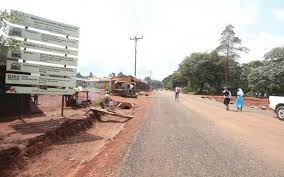
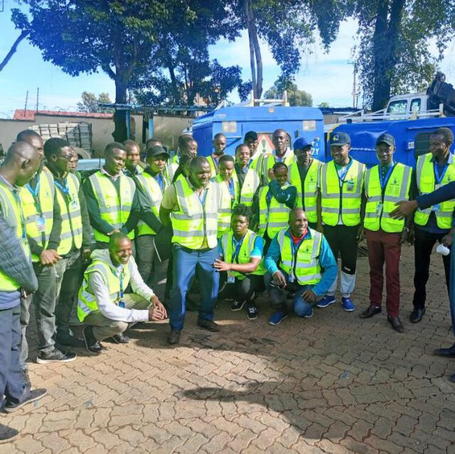
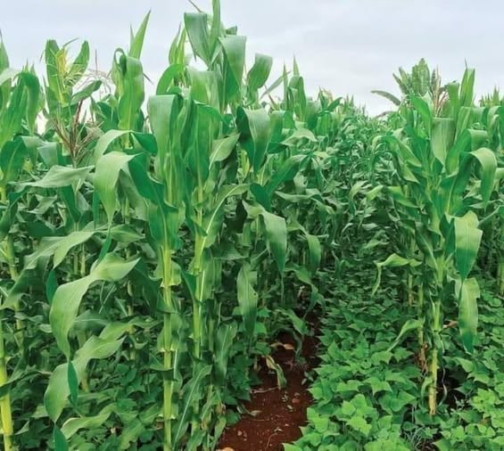
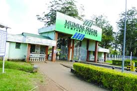
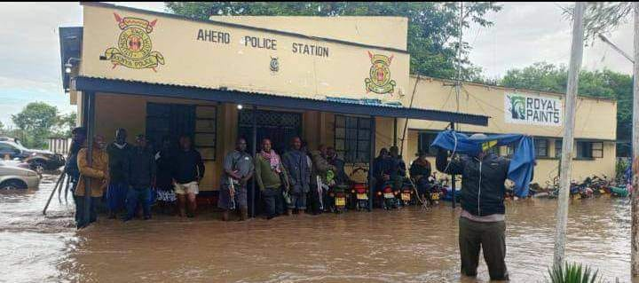

Koru-Soin Dam EIA Report
Envronmental Impact assessment.

Malava-Kimang'eti Road Construction
KeRRA-Tographical surveying.

Kenya Power: Utility Mapping
2024-2025 Loss Reduction Project.

Subsistence Farming: Maize & Beans
Smallholder farms mapping.

Cattle Rustling in Baringo
Livestock theft monitoring.

Sugarcane Farming: Muhoroni
Sugarcane production mapping.

Sugarcane Farming: Kibos
GIS-based analysis.

Sugarcane Farming: Mumias
Farm monitoring and analysis.

Reforestation Projects
Tree cover monitoring.

Ahero Flood Risk Mapping
Flood-prone areas identification.

Drought Monitoring
Drought early warning systems.